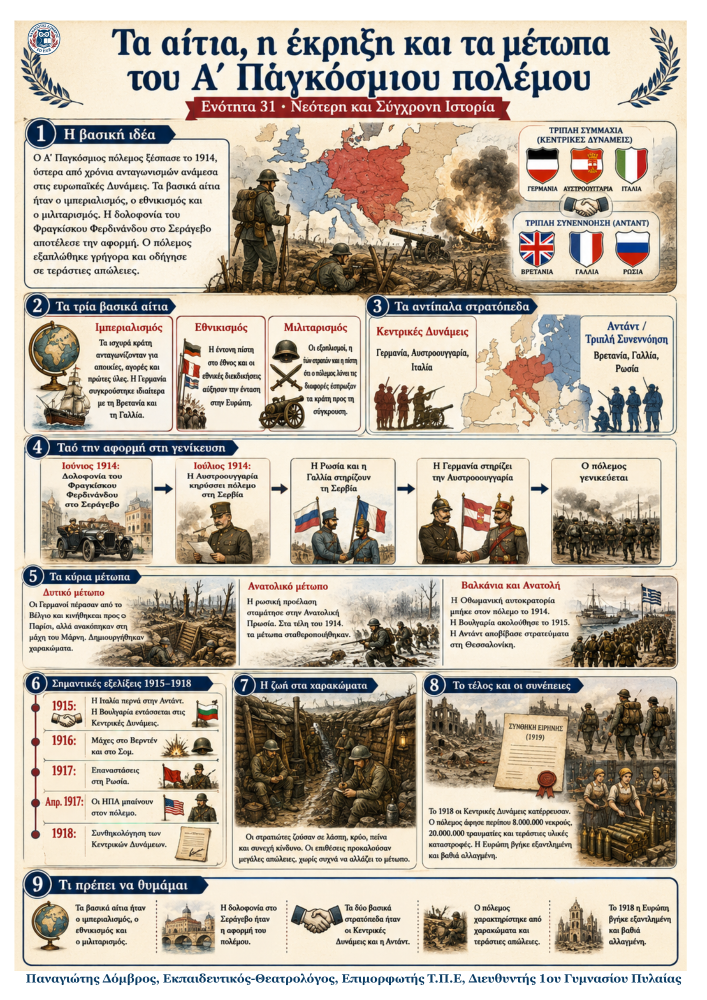

Δεν βρέθηκε η λέξη ή η φράση μέσα στην ενότητα.
1Η βασική ιδέα
Ο Α΄ Παγκόσμιος πόλεμος ξέσπασε το 1914, ύστερα από χρόνια ανταγωνισμών ανάμεσα στις ευρωπαϊκές Δυνάμεις. Τα βασικά αίτια ήταν ο ιμπεριαλισμός, ο εθνικισμός και ο μιλιταρισμός. Η δολοφονία του Φραγκίσκου Φερδινάνδου στο Σεράγεβο αποτέλεσε την αφορμή. Ο πόλεμος εξαπλώθηκε γρήγορα, δημιούργησε μεγάλα μέτωπα και οδήγησε σε πρωτοφανείς απώλειες.
2Τα τρία βασικά αίτια
| Ιμπεριαλισμός | Εθνικισμός | Μιλιταρισμός |
|---|---|---|
| Πολιτική επέκτασης των ισχυρών βιομηχανικών κρατών. Η Γερμανία ζητούσε πρώτες ύλες, αγορές και αποικίες και συγκρούστηκε με Βρετανία και Γαλλία. | Η πίστη στην ανωτερότητα του έθνους ενίσχυσε τον ανταγωνισμό. Οι λαοί δεν επιθυμούσαν όλοι τον πόλεμο, αλλά δεν εγκατέλειπαν τις εθνικές τους διεκδικήσεις. | Υπερβολική προβολή των στρατιωτικών αξιών. Η αύξηση των εξοπλισμών και η πίστη ότι ο πόλεμος λύνει τις διαφορές έκαναν τη σύγκρουση πιθανότερη. |
3Τα αντίπαλα στρατόπεδα
| Κεντρικές Δυνάμεις / Τριπλή Συμμαχία | Γερμανία, Αυστροουγγαρία, Ιταλία |
|---|---|
| Αντάντ / Τριπλή Συνεννόηση | Βρετανία, Γαλλία, Ρωσία |
4Από την αφορμή στη γενίκευση του πολέμου
| Ιούνιος 1914 Δολοφονία στο Σεράγεβο |
→ | Ιούλιος 1914 Αυστροουγγαρία εναντίον Σερβίας |
→ | Ρωσία και Γαλλία στηρίζουν τη Σερβία | → | Γερμανία στηρίζει την Αυστροουγγαρία |
|---|
5Τα κύρια μέτωπα και η εξέλιξη του πολέμου
| Δυτικό μέτωπο | Ανατολικό μέτωπο | Βαλκάνια και Ανατολή |
|---|---|---|
| Οι Γερμανοί εισέβαλαν στο Βέλγιο και κινήθηκαν προς το Παρίσι. Ανακόπηκαν στη μάχη του Μάρνη. Στη συνέχεια δημιουργήθηκε εκτεταμένο δίκτυο χαρακωμάτων. | Η ρωσική προέλαση στην Ανατολική Πρωσία σταμάτησε από τις γερμανικές δυνάμεις. Στα τέλη του 1914 και τα δύο κύρια μέτωπα σταθεροποιήθηκαν. | Η Οθωμανική αυτοκρατορία μπήκε στις Κεντρικές Δυνάμεις τον Οκτώβριο 1914. Η Βουλγαρία ακολούθησε το 1915. Η Αντάντ απέτυχε στα Δαρδανέλια και αποβίβασε στρατεύματα στη Θεσσαλονίκη. |
6Η ζωή στα χαρακώματα
Τα χαρακώματα ήταν βαθιές τάφροι όπου οι στρατιώτες ζούσαν για μεγάλα διαστήματα μέσα σε λάσπη, κρύο, πείνα, φόβο και συνεχή κίνδυνο. Οι επιθέσεις προκαλούσαν τεράστιες απώλειες, χωρίς συχνά να αλλάζουν ουσιαστικά τη γραμμή του μετώπου. Η εμπειρία αυτή ανέδειξε τη σκληρότητα και τον απάνθρωπο χαρακτήρα του πολέμου.
7Οι σημαντικότερες εξελίξεις
| 1915 | Η Ιταλία εγκατέλειψε τους παλιούς συμμάχους της και προσχώρησε στην Αντάντ. Η Βουλγαρία εντάχθηκε στις Κεντρικές Δυνάμεις. |
|---|---|
| 1916 | Μεγάλες μάχες στο Βερντέν και στον Σομ προκάλεσαν εκατοντάδες χιλιάδες απώλειες χωρίς αποφασιστικό αποτέλεσμα. |
| Φεβρ. 1917 | Επανάσταση στη Ρωσία ανέτρεψε τον τσάρο. |
| Απρ. 1917 | Οι ΗΠΑ μπήκαν στον πόλεμο στο πλευρό της Αντάντ και έδωσαν σημαντική στρατιωτική και οικονομική βοήθεια. |
| Ιούν. 1917 | Η Ελλάδα μπήκε στον πόλεμο ως σύμμαχος της Αντάντ. |
| 1918 | Η Ρωσία αποχώρησε με τη συνθήκη του Μπρεστ-Λιτόφσκ. Το φθινόπωρο οι Κεντρικές Δυνάμεις άρχισαν να συνθηκολογούν. |
8Το τέλος και οι συνέπειες
Το φθινόπωρο του 1918 οι Κεντρικές Δυνάμεις κατέρρευσαν. Στη Γερμανία ανατράπηκε ο κάιζερ Γουλιέλμος Β΄. Ο πόλεμος άφησε περίπου 8.000.000 νεκρούς, 20.000.000 τραυματίες και τεράστιες υλικές καταστροφές. Η Ευρώπη βγήκε εξαντλημένη και η παγκόσμια πρωτοκαθεδρία της κλονίστηκε.
9Τι πρέπει να θυμάμαι
Τα βασικά αίτια ήταν ο ιμπεριαλισμός, ο εθνικισμός και ο μιλιταρισμός.
Η δολοφονία του Φραγκίσκου Φερδινάνδου στο Σεράγεβο αποτέλεσε την αφορμή.
Τα δύο κύρια στρατόπεδα ήταν οι Κεντρικές Δυνάμεις και η Αντάντ.
Ο πόλεμος χαρακτηρίστηκε από χαρακώματα, αδιέξοδο και τεράστιες ανθρώπινες απώλειες.
Το 1917 οι ΗΠΑ μπήκαν στον πόλεμο, ενώ η Ρωσία οδηγήθηκε σε επανάσταση και αποχώρησε.
Το 1918 ο πόλεμος τελείωσε, αφήνοντας την Ευρώπη εξαντλημένη και βαθιά αλλαγμένη.
